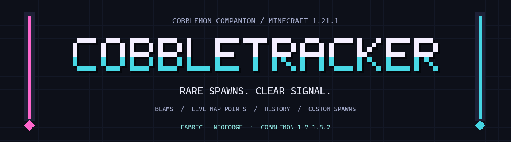
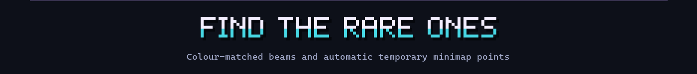
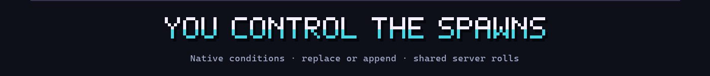
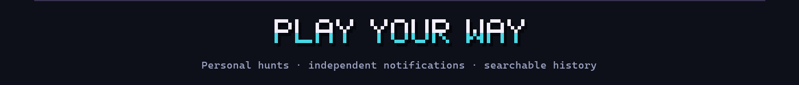
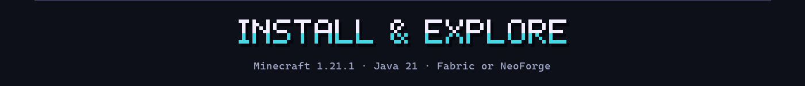

Find the rare spawn. Follow its beam. Make the next encounter your own.
Minecraft 1.21.1 · Fabric / NeoForge · Java 21 · Cobblemon 1.7–1.8.2
CobbleTracker brings rare encounters into view with coloured beams, automatic minimap points, spawn history and personal hunts. Server owners can define their own categories, notifications and scheduled Pokémon spawns — including native biome, weather, time and structure conditions.
Read the wiki · Report an issue

A signal you can follow
- Coloured spawn beams mark tracked wild Pokémon in your loaded chunks. Configure their range, height and out-of-range grace period.
- Automatic temporary minimap points appear in the beam colour, follow the Pokémon and clear when tracking ends. No chat click or permanent waypoint import is needed.
- Xaero’s Minimap, JourneyMap and VoxelMap integrations use compatible, separately installed client minimap mods. CobbleTracker itself does not draw a minimap. VoxelMap’s available loader support differs; see the wiki.
- Spawn history keeps encounter details, locations and capture outcomes. Browse it with
/ct; use/lastlegendfor legendary history, with a chat fallback when the client GUI is unavailable.

Your Pokémon. Your spawn rules.
Add species files in config/cobbletracker/spawns/ and use native Cobblemon spawn entries:
replaceremoves that species’ upstream natural Cobblemon/datapack spawns, including matching herd members, while the custom species and group are enabled.appendkeeps those natural entries and adds your scheduled rules.- Define biomes, dimensions, day/night, rain, thunder, structures, height and other supported native conditions, including anticonditions and version-compatible presets.
- Give a group one shared server roll and timer. The legendary group defaults to 35% per 72000 server ticks — approximately one hour at 20 TPS. The bundled Mew example starts disabled.
- Weight eligible player/rule pairs. Mew with weight 1 near one player and Latias with weight 2 near another give conditional shares of 33.33% / 66.67%. More eligible blocks do not multiply a rule’s weight.
/checkspawn legendary shows the aggregate species shares, highest first, separately from the shared roll chance and countdown. These shares total 100% after a successful roll; current conditions must still permit placement.
Commands, breeding and direct scripted spawns remain available with replace. Disabling/removing a replacement or switching to append restores the upstream entries on a successful reload.
Keeping an existing setup? The legacy category scheduler and legendaries.yml remain available. mode: auto checks actual natural tier coverage; removing that line still means AUTO. Use always when you deliberately want the legacy scheduler to run alongside the natural pool. /checklegendary identifies the active spawning source.
Legacy spawn height limit. Set max-vertical-distance: 16 inside a category's spawn: block to keep placement within 16 blocks above or below the player. This is also the default for older configs. The legacy spawner supports cave floors and fractional surface heights such as snow and slabs. If the chosen Pokémon does not fit, it tries other positions within the same limits; it never falls back to a distant surface height. Species JSON and upstream natural spawns use Cobblemon's own placement settings.

Useful information, on your terms
Independent notification controls. Mute chat, titles, actionbar or sound without disabling your beams and minimap points. The category master switch still turns off that category for you.
/ct notify mythicals chat off
/ct notify mythicals title off
/ct notify mythicals actionbar off
/ct notify mythicals sound offChat coordinates are off by default. Server owners can enable general-settings.show-spawn-location-in-chat. Nearby live entity indicators still show their targets; coordinate rounding is not a way to conceal a loaded Pokémon.
Personal hunt mode. Press \ by default, or check Minecraft’s Controls, to choose species to highlight among nearby loaded wild Pokémon. Your hunt list persists between sessions. This highlights encounters; it does not create them. Server policy can disable hunting.
Categories that fit your server. Legendary, Mythic, Ancient, Ultra-Beast, Shiny, Boss, Starter and regional-form categories are configurable. Add species, label, form, level, IV, biome and other matcher conditions. Categories classify existing Pokémon; they do not add new species to Cobblemon.
A little more for your community. Optional modules include boss health bars, temporary catch protection, server-first Hall of Fame records, capture statistics, spawn/catch command hooks and asynchronous Discord webhook notifications.
Placeholders for your displays. Feed cached roll chances, countdowns, conditional species shares and recent species into compatible chat, TAB or sidebar mods. Optional integrations cover Fabric Text Placeholder API, NeoForge Forge PlaceholderAPI and direct TAB callbacks. Your display mod must support the selected integration.
Commands at a glance
| Command | Purpose |
|---|---|
/ct | Open spawn history; client mod required for the GUI |
/lastlegend | Recent legendary history / chat fallback |
/checkspawn <group> | Aggregate conditional species shares and group timer |
/checklegendary | Inspect the active legendary spawning source |
/spawnlegendary | Operator attempt using the active JSON group or legacy director |
/ct notify | Personal notification channels and radius |
/ct hof | Server-first capture records |
/ct theme <name> | Choose a GUI theme |
/ct reload | Operator configuration reload |
/ct admin | Operator temporary live settings |
LuckPerms nodes are used when available; otherwise vanilla permission levels apply. The admin panel changes live values, while /ct reload reapplies the configuration on disk.

Installation
- Use Minecraft 1.21.1 and Java 21. Choose the JAR for Fabric or NeoForge.
- Install Cobblemon and its required loader/Kotlin dependencies. Fabric also requires Fabric API. CobbleTracker has no Architectury API runtime requirement.
- Install CobbleTracker on the server for tracking, commands and server modules. Add it on the client for beams, the history GUI, automatic map points and hunt mode. Singleplayer uses both parts in the same installation.
- Add a compatible client minimap if you want map points. Configure
config/cobbletracker/and run/ct reloadafter edits. Rejected reloads retain the working configuration.
Compatibility checks cover Cobblemon 1.7.0, 1.7.3, 1.8.0, 1.8.1 and 1.8.2 on both loaders, with gameplay/provider checks scoped separately. Match every dependency to Minecraft 1.21.1 and its loader; not every combination of minimap, renderer, shader or addon is interchangeable.
Start here: Installation & quick start · Custom species spawns · Placeholders · Troubleshooting
If you would like to support development: PayPal.